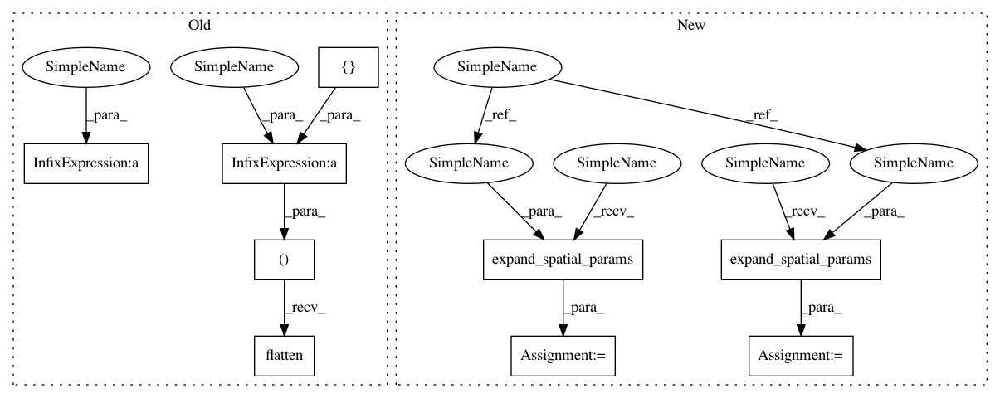

863a9dcee691e850e79d97a16abb977e24324fa1,niftynet/layer/downsample.py,DownSampleLayer,layer_op,#DownSampleLayer#Any#,32
Before Change
spatial_rank = layer_util.infer_spatial_rank(input_tensor)
look_up_operations(self.func, SUPPORTED_OP)
if self.func == "CONSTANT":
kernel_shape = np.hstack((
[self.kernel_size] * spatial_rank, 1, 1)).flatten()
np_kernel = layer_util.trivial_kernel(kernel_shape)
kernel = tf.constant(np_kernel, dtype=tf.float32)
output_tensor = [tf.expand_dims(x, -1)
for x in tf.unstack(input_tensor, axis=-1)]
output_tensor = [tf.nn.convolution(
input=inputs,
filter=kernel,
strides=[self.stride] * spatial_rank,
padding=self.padding,
name="conv") for inputs in output_tensor]
output_tensor = tf.concat(output_tensor, axis=-1)
else:
output_tensor = tf.nn.pool(
input=input_tensor,
window_shape=[self.kernel_size] * spatial_rank,
pooling_type=self.func,
padding=self.padding,
dilation_rate=[1] * spatial_rank,
strides=[self.stride] * spatial_rank,
name=self.layer_name)
return output_tensor
After Change
self.stride = stride
def layer_op(self, input_tensor):
spatial_rank = layer_util.infer_spatial_rank(input_tensor)
look_up_operations(self.func, SUPPORTED_OP)
kernel_size_all_dims = layer_util.expand_spatial_params(
self.kernel_size, spatial_rank)
stride_all_dims = layer_util.expand_spatial_params(
self.stride, spatial_rank)
if self.func == "CONSTANT":
full_kernel_size = kernel_size_all_dims + [1, 1]
np_kernel = layer_util.trivial_kernel(full_kernel_size)
kernel = tf.constant(np_kernel, dtype=tf.float32)
In pattern: SUPERPATTERN
Frequency: 3
Non-data size: 9
Instances
Project Name: NifTK/NiftyNet
Commit Name: 863a9dcee691e850e79d97a16abb977e24324fa1
Time: 2017-07-17
Author: wenqi.li@ucl.ac.uk
File Name: niftynet/layer/downsample.py
Class Name: DownSampleLayer
Method Name: layer_op
Project Name: NifTK/NiftyNet
Commit Name: 863a9dcee691e850e79d97a16abb977e24324fa1
Time: 2017-07-17
Author: wenqi.li@ucl.ac.uk
File Name: niftynet/layer/downsample.py
Class Name: DownSampleLayer
Method Name: layer_op
Project Name: NifTK/NiftyNet
Commit Name: addcb13fb3dcd2cdbc32ac81611a78ac1c19b02f
Time: 2017-08-23
Author: egibson@cs.ucl.ac.uk
File Name: niftynet/layer/channel_sparse_convolution.py
Class Name: ChannelSparseConvLayer
Method Name: layer_op
Project Name: NifTK/NiftyNet
Commit Name: 863a9dcee691e850e79d97a16abb977e24324fa1
Time: 2017-07-17
Author: wenqi.li@ucl.ac.uk
File Name: niftynet/layer/convolution.py
Class Name: ConvLayer
Method Name: layer_op